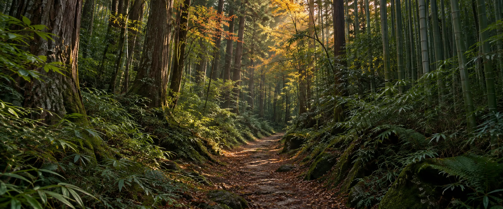
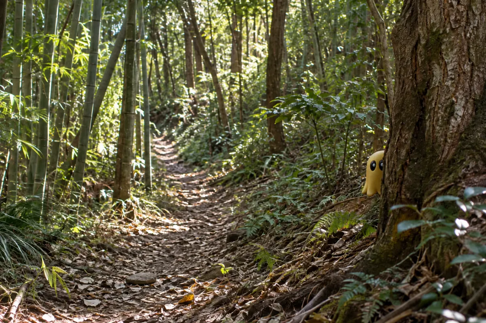
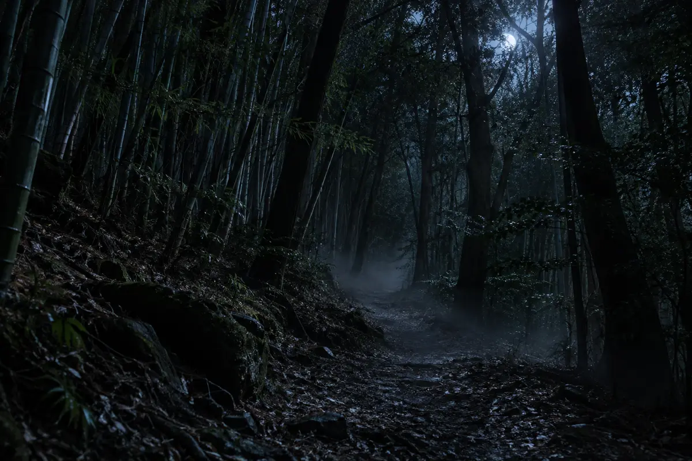
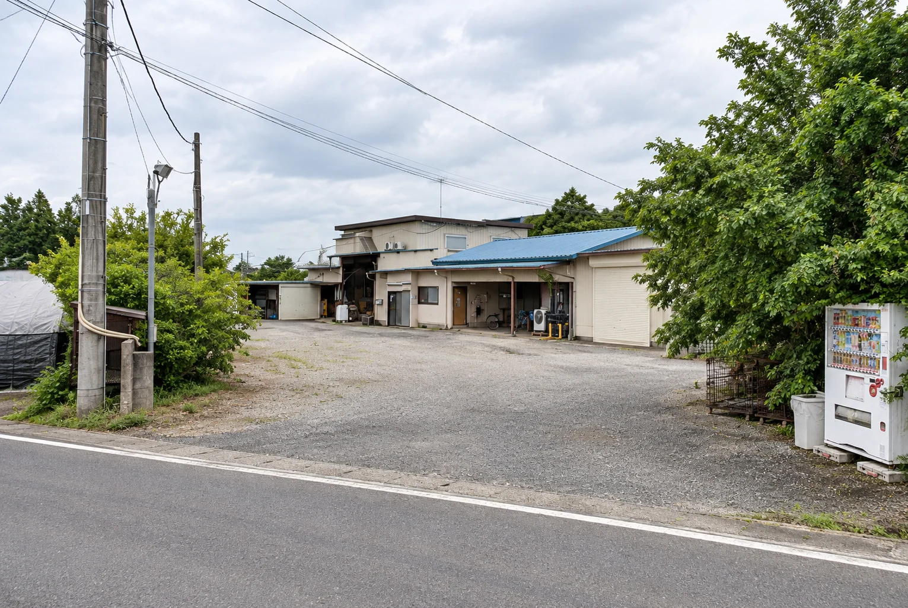
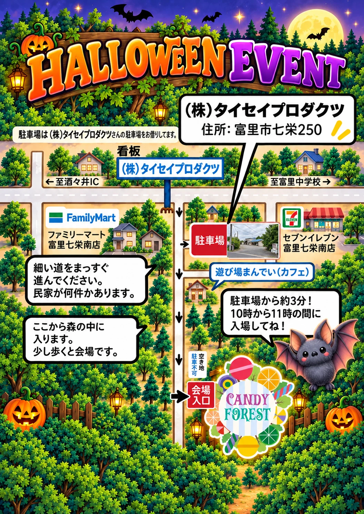
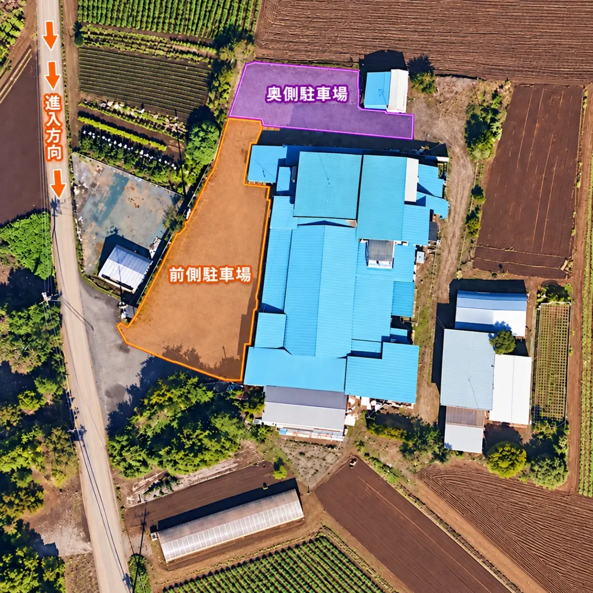
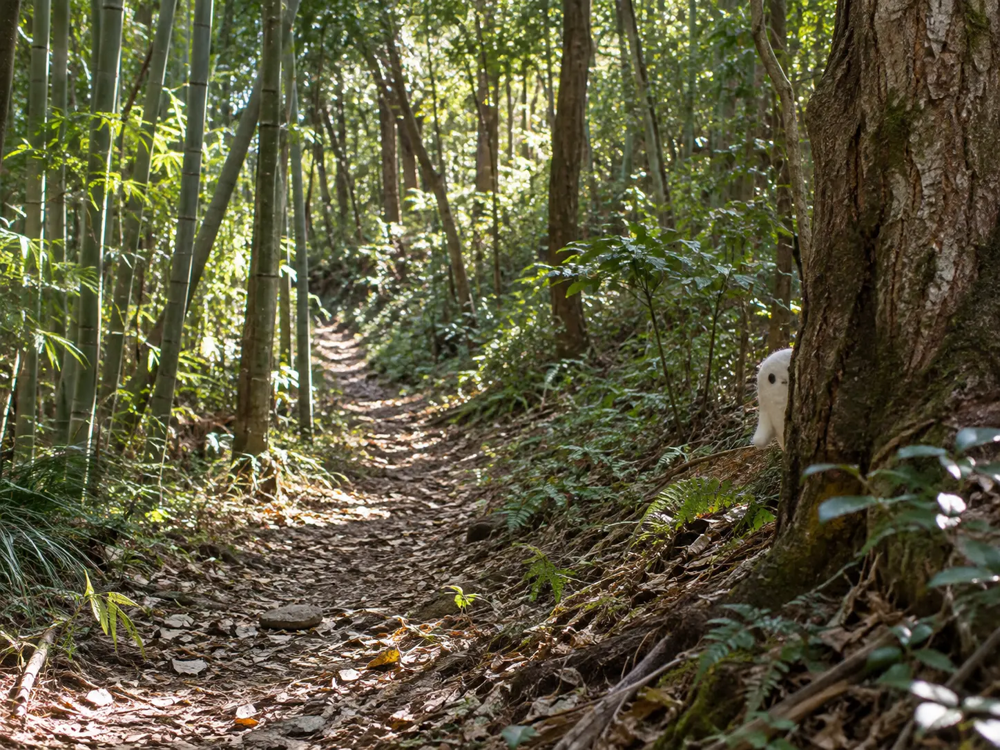
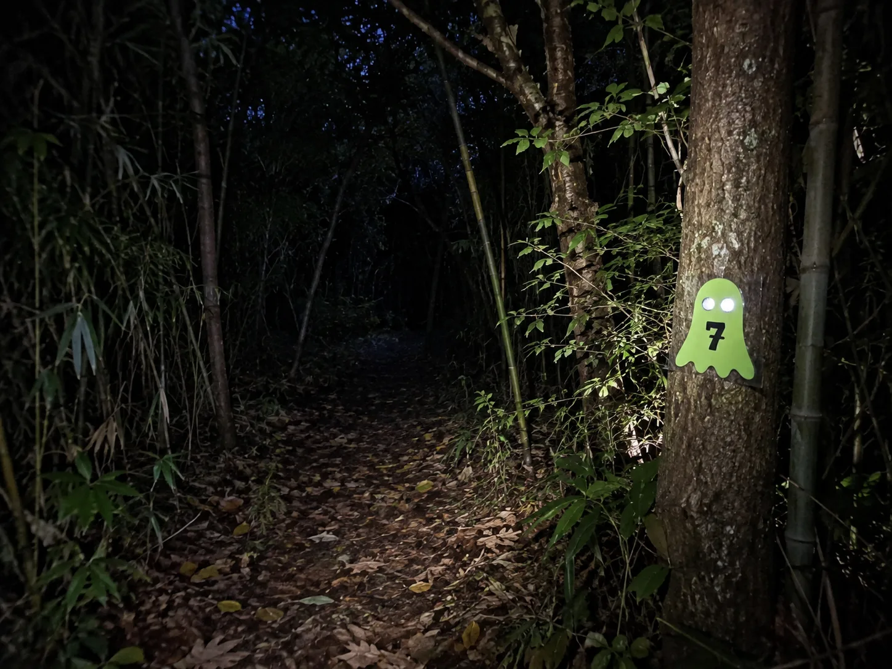

1グループに1台、電波の入るスマホが必要ですOne phone with mobile data per family or team
会場にWi-Fiはありません。キャンディの森とゾンビ・スカベンジャーハントで使います。充電してきてください。There is no Wi-Fi. You'll need it for both hunts — come fully charged.

10月31日（土）Saturday, October 31, 2026
THE HALLOWEEN EVENT 2026
昼はキャンディの森と午後のイベント、 夜はゾンビ・スカベンジャーハント！Candy Forest and Afternoon Events by day, the Zombie Scavenger Hunt at night!
キャンディの森 スタートまでCandy Forest opens in
まずは予約Start here
ブライアン英会話教室にメールでご予約ください。Reserve by emailing Bryan's English School.
キャンディの森とゾンビ・スカベンジャーハントは、どちらか一つでも両方でも参加できます。Choose Candy Forest, the Zombie Scavenger Hunt, or both.
大人は入場無料です。未就学児・小学生は、保護者の同伴が必要です。Admission is free for adults in your family or group. Preschool and elementary-age children must be accompanied by a parent or guardian.
参加する子どもは、参加するイベントのバッグを購入してください。キャンディの森はキャンディバッグ、ゾンビはグッズバッグです。Each participating student needs the bag for their event: a Candy Bag for Candy Forest or a Goodie Bag for the Zombie Hunt.
午後のイベントは、キャンディの森またはゾンビ・スカベンジャーハントに参加するご家族が対象です。Afternoon Events are for families joining Candy Forest or the Zombie Scavenger Hunt.
バッグは予約した方のみ・お申し込みは10月23日（金）までBags for reserved families only — orders close Friday, Oct 23
メールで予約するReserve by emailbryans.english@gmail.com
会場にWi-Fiはありません。キャンディの森とゾンビ・スカベンジャーハントで使います。充電してきてください。There is no Wi-Fi. You'll need it for both hunts — come fully charged.
子どもは仮装で参加してください。保護者の仮装は自由です。夜のゾンビ・スカベンジャーハントは仮装不要です。Children must wear costumes for the Candy Forest. Optional for parents. No costumes needed for the night-time Zombie Scavenger Hunt.
来場前におすませください。Please go before you arrive.
1日の予定The day at a glance
キャンディの森とゾンビ・スカベンジャーハントは、どちらか一つでも両方でも参加できます。午後のイベントは、どちらかに参加するご家族が対象です。Join Candy Forest, the Zombie Scavenger Hunt, or both. Afternoon Events are for families joining either.

森にかくれた10ひきのブーハーゴーストをさがそう。受付は10:30まで。仮装必須。Find ten hidden Booha Ghosts in the forest. Last check-in 10:30. Costumes required.
キャンディバッグ ¥1,000お弁当を持ってきて、ストーリータイム、ハロウィンペインティング、魔女の材料さがし、森のモンスターづくり、自由あそびを楽しみましょう。地面に座るので、ビニールのレジャーシートをお持ちください。Bring your own lunch and enjoy Story Time, Halloween Painting, the Witch's Ingredient Hunt, Build a Forest Monster, and Free Play. Please bring a plastic picnic sheet for sitting on the ground.
キャンディの森・ゾンビの参加者が対象（追加料金なし）For Candy Forest or Zombie Hunt participants — no extra charge
暗い森でゴーストをさがせ。サイレンが鳴ったらかくれろ！Find the ghosts in the dark forest. When the siren sounds — hide!
18:00までにホスピタルデスクで受付。仮装は不要です。Check in at the Hospital Desk by 6:00 pm. No costumes needed.
グッズバッグ ¥1,000料金Prices
子ども1人あたり・両方で¥2,000・大人は無料Per participating child · both ¥2,000 · adults free
バッグのお申し込みは10月23日（金）まで。イベントが中止になった場合もバッグはお渡しします。返金はありません。Bag orders close Friday, October 23. If the event is cancelled, your bags will still be available. No refunds.
時間Timeline
駐車場オープンParking opens
キャンディの森スタートCandy Forest starts
キャンディの森 最終受付Last Candy Forest check-in
キャンディの森おわり・午後のイベントCandy Forest ends · Afternoon Events begin
午後のイベントおわりAfternoon Events end
ゾンビ・スカベンジャーハント（18:00までに受付）Zombie Scavenger Hunt — check in by 6:00 pm
準備
会場への行き方
駐車場から森の入口まで徒歩約3分About a three-minute walk from parking to the forest entrance.
目印：ファミリーマート富里七栄南店、セブンイレブン富里七栄南店Landmarks: FamilyMart Tomisato Nanae-Minami, 7-Eleven Tomisato Nanae-Minami
Googleマップで見るOpen Google Maps


お問い合わせContact
ブライアン英会話教室Bryan's English School
さがす・スキャン・ごほうび・つぎのゴーストFind · Scan · Reward · Next Target
森の中にかくれている、10色のブーハーゴーストをさがします。家族ごとに順番がちがうので、今のターゲットだけを見てください。受付は10:00〜10:30、キャンディの森は12:00までです。子どもは仮装で参加してください。Find ten colored Booha Ghosts hidden in the real forest. Your family receives a different order, so show only the current target. Check in 10:00–10:30. The Candy Forest ends at 12:00. Children must wear costumes.
ハントは日本時間10:00に始まります。The hunt opens at 10:00 Japan/Tokyo time.

かぞくのハントYour family hunt
家族またはチーム名を入力してください。この端末だけに保存され、10色の順番が作られます。Choose a family or team name. It stays on this device only. The site will create your private ten-color order when you start.
新しいハントは10:00から10:30までに始めてください。キャンディの森は12:00までです。New hunts must start between 10:00 and 10:30. The Candy Forest ends at 12:00.
今のターゲットYour current target
森でこの色のゴーストを見つけて、QRコードをスキャンしてください。Find this color in the forest, then scan its QR code.
キャンディの森 コンプリートCandy Forest complete
この画面をブライアンに見せて、キャンディバッグをもらってください。Show this screen to Bryan to collect your candy bag.
ゾンビ・スカベンジャーハントZombie Scavenger Hunt
ライムグリーンのゴースト15ひき。暗い森。サイレン。ゾンビ。QRコードはありません。Fifteen lime-green ghosts. A dark forest. A siren. Zombies. No QR codes.
18:00スタート・18:00までに受付Starts 6:00 pm — check in by 6:00 pm
グッズバッグ ¥1,000Goodie bag ¥1,000
小学生〜高校生（未就学児は参加不可）・小学生は大人の同伴が必要Elementary to high school; no preschoolers. Elementary-age students must be accompanied by an adult.

チームでゴースト1から15までをさがします。写真が証拠になります。Teams search for Ghost 1 through Ghost 15. Photograph each ghost as proof.
スマホのライトは使えます。ライトには紫色のテープをつけてください。紫のテープは受付でお渡しします。ブラックライトとQRスキャンは使いません。Phone lights are allowed, but cover every active light with purple tape. Purple tape is handed out at check-in. No blacklights or QR scans.
サイレンが鳴ったら、全員かくれてください。かくれていれば安全です。ゾンビがつかむことはありません。かくれていない人や、光が見えた人は、ゾンビに洗濯ばさみをつけられます。When the siren sounds, everyone hides. Anyone who hides is safe. Zombies never grab anyone. Anyone not hiding, or showing a light, may get a clothespin clipped on by a zombie.
洗濯ばさみをつけられたら、チーム全員で病院（ホスピタルデスク）へ戻り、外してもらいます。チーム用の光る薬を受け取って再スタート。15番を見つけたら、病院に戻ってゴールです。If anyone gets a clothespin, the whole team returns to the Hospital Desk to have it removed and collect a glowing team medicine, then carries on. After Ghost 15, return to the Hospital Desk to finish.